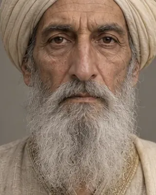

1662
মীৰ জুমলা
1591–1663 · Mughal governor of Bengal

Invaded Assam in January 1662, took Garhgaon in March and agreed the Treaty of Ghilajharighat in January 1663. Died on the return at Mankachar on 30 March 1663.
Born in Isfahan in 1591.
Record confidence: high.